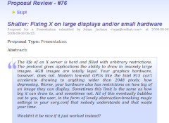

If you are seeing this page then it is because you have agreed (or perhaps have been persuaded) to help us review proposals for participation at linux.conf.au 2009. Please read this guide before beginning to review proposals.

To get started visit the Review proposals link in the review menu. This menu is found to the right of each review page and can be used to jump between sections. Each section is detailed below but the quickest way of gettings tarted is by going to review proposals and clicking on "review now" on one of the items.
This page is where to go to start reviewing. There are three types of proposals: Presentations, miniconfs and tutorials. Under each section is a set of proposals that you haven't reviewed yet and that need reviewing. The proposals are in a semi-random order weighted towards a fair review process, as such the quickest way to get started is by reviewing the first proposal on the list.
From the review page you can view details about the proposal, the speaker/organiser and also what other reviewers have written. You can then fill out the form or skip the proposal. If you feel you don't know enough on the topic it is recommended that you skip the proposal and move onto the next one.
When filling out the form please select the most appropriate stream for the proposal or if it is really obscure, select Miscellaneous. When reviewing presentations and tutorials you need to select a recommended miniconf for the proposal. The miniconf list is quite large as it includes every miniconf (accepted or not). This is because we are reviewing miniconf proposals side-by-side to the main conference. Sorting presentations and tutorials into miniconfs will give us a chance to determine which miniconfs are going to be more popular. If the proposals isn't accepted the miniconf selected for the presentation or tutorial may have the talk suggested to them. If the miniconf that was selected isn't itself included in the conference we will move the proposals to an appropriate miniconf.
When you skip or submit your review you will automatically be taken to your next paper for review. This may be from any of the three categories so if you don't wish to review a miniconf for example, just skip until you find a proposal you are comfortable reviewing.
This section lets you view a list of the proposals you have reviewed. You can view each proposal again, or update your review. When updating your review you can edit your comment, change your rank and re-categorise its stream+miniconf.
This is the main page of statistics for all of the proposals. Only proposals with reviews appears on this page but the statistics are averaged out over each review.
You can mouse over each section to view abstracts, reviewer comments or speaker information. Mousing over the selected stream or average rating lets you see what each individual reviewer gave as a rating.
This page is very basic and only consists of reviewer statistics. The more reviews the better!